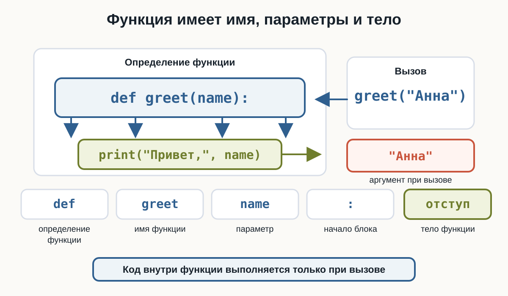
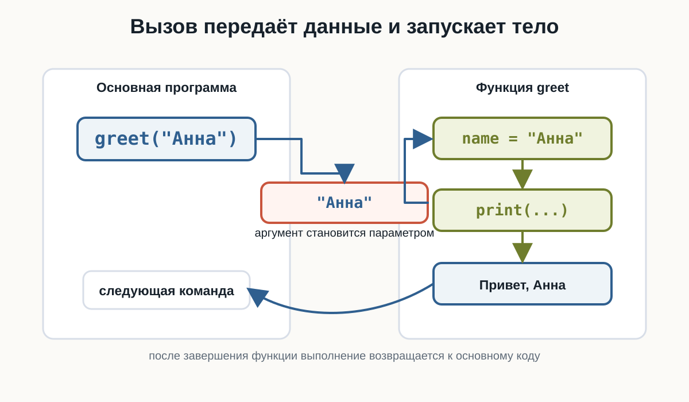
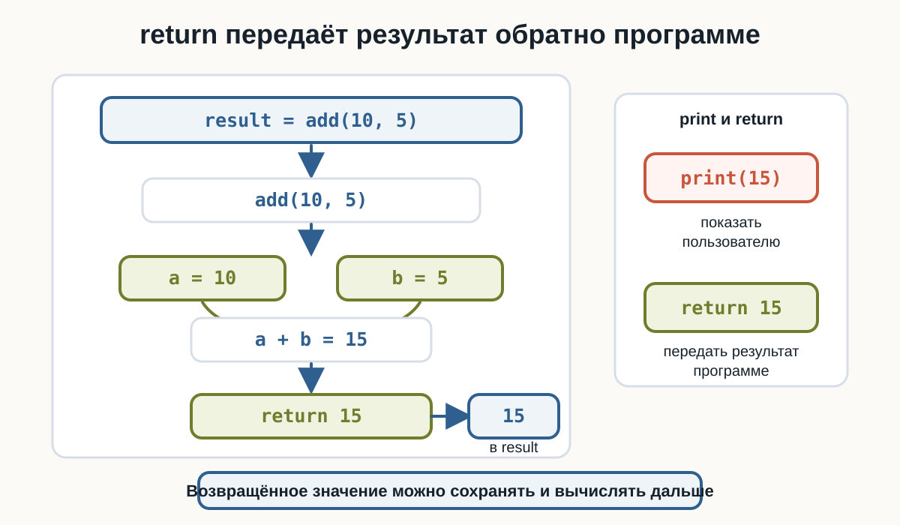
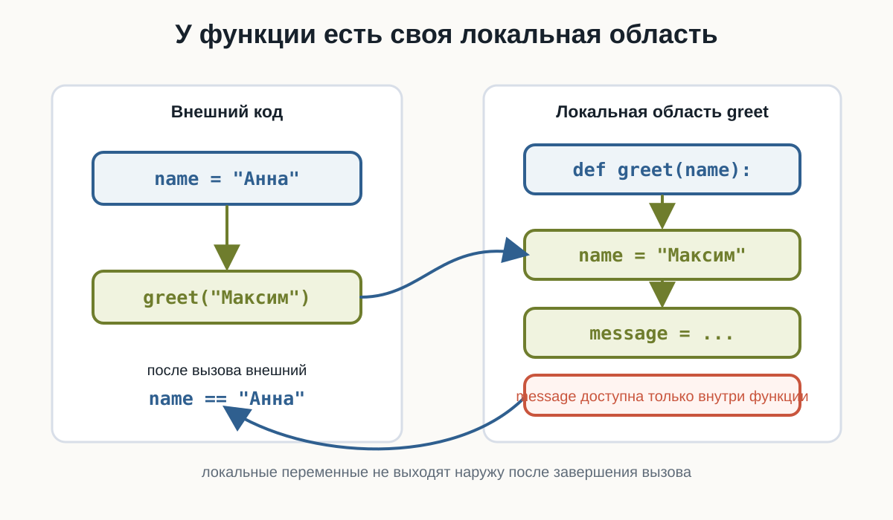
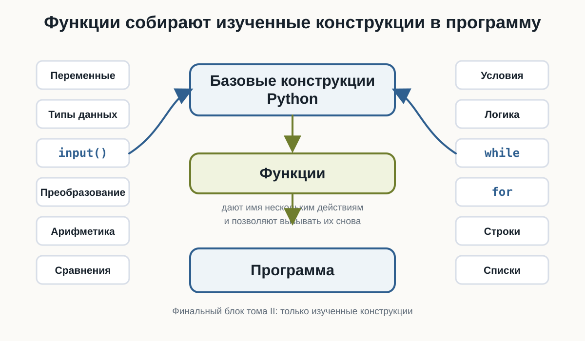

3.13 Функции
функции Python, def Python, return Python, параметры функции, аргументы Python, локальные переменные
Главный вопрос главы:
Как объединить несколько действий в один переиспользуемый блок кода и вызывать его тогда, когда он нужен?
К этому моменту наши программы уже умеют многое.
Мы можем получать данные:
name = input("Введите имя: ")выполнять вычисления:
total = price * quantityпринимать решения:
if age >= 18:
print("Доступ разрешён")повторять действия:
for number in range(1, 6):
print(number)и работать с наборами данных:
numbers = [10, 20, 30]Но по мере роста программы появляется новая проблема.
Один и тот же код может понадобиться несколько раз.
Например:
print("--------------------")
print("Добро пожаловать!")
print("--------------------")Если такой блок нужен в трёх местах, можно скопировать его:
print("--------------------")
print("Добро пожаловать!")
print("--------------------")
print("Основная часть программы")
print("--------------------")
print("Добро пожаловать!")
print("--------------------")Но копирование кода быстро становится неудобным.
Гораздо лучше один раз дать группе команд имя, а затем вызывать её тогда, когда она нужна.
Для этого в Python существуют функции.
Что такое функция
Функция — это именованный блок кода, который можно выполнить по вызову.
Например:
def greet():
print("Привет!")Здесь мы создали функцию:
greetНо пока она ещё не выполнялась.
Чтобы запустить код внутри функции, её нужно вызвать:
greet()Полная программа:
def greet():
print("Привет!")
greet()Результат:
Привет!В HTML-версии можно проверить, что само определение функции ничего не выводит, а каждый вызов запускает тело заново.
Общая идея:
создать функцию
↓
дать ей имя
↓
описать действия
↓
вызвать функцию
↓
действия выполняютсяСоздание функции с def
Для создания собственной функции используется слово:
defНапример:
def greet():
print("Привет!")Эту запись можно разобрать так:
def → объявляем функцию
greet → имя функции
() → круглые скобки
: → начало блока
... → тело функцииОбщая форма:
def имя_функции():
действиеС помощью:
defмы определяем функцию.
Например:
def show_message():
print("Python")Но код внутри неё выполняется только после вызова:
show_message()Вызов функции
После определения функции её можно вызвать:
def greet():
print("Привет!")
greet()Вызов выглядит так:
greet()Круглые скобки здесь важны.
Сравните:
greetи:
greet()На текущем этапе достаточно запомнить:
Чтобы выполнить функцию, после её имени ставятся круглые скобки.
Функцию можно вызвать несколько раз
Главное преимущество функции — возможность повторного использования.
Например:
def greet():
print("Добро пожаловать!")
greet()
greet()
greet()Результат:
Добро пожаловать!
Добро пожаловать!
Добро пожаловать!Код функции написан один раз, но выполнен три раза.
Несколько команд внутри функции
Функция может содержать несколько строк:
def show_header():
print("--------------------")
print("Путь Python-разработчика")
print("--------------------")Вызов:
show_header()Результат:
--------------------
Путь Python-разработчика
--------------------Все строки с одинаковым отступом относятся к функции.
Отступы внутри функции
Как и в if, for и while, Python использует отступы для определения блока.
Правильно:
def greet():
print("Привет!")
print("Добро пожаловать!")Неправильно:
def greet():
print("Привет!")После:
def greet():команды функции записываются с отступом:
def greet():
print("Привет!")Обычно используется 4 пробела.
Код после функции
Рассмотрим:
def greet():
print("Привет!")
print("Начало программы")
greet()
print("Конец программы")Результат:
Начало программы
Привет!
Конец программыPython не выполняет функцию в момент её определения.
Сначала он узнаёт, что функция существует:
def greet():А код внутри выполняется только при:
greet()Зачем нужны функции
Функции помогают решать сразу несколько задач.
Они позволяют:
не повторять одинаковый код
↓
разделять программу на понятные части
↓
давать действиям понятные имена
↓
повторно использовать готовую логику
↓
упрощать чтение и изменение программыНапример, вместо:
print("--------------------")
print("Меню")
print("--------------------")в нескольких местах можно написать:
def show_menu_header():
print("--------------------")
print("Меню")
print("--------------------")а затем:
show_menu_header()Понятные имена функций
Имя функции должно описывать действие.
Хорошие примеры:
show_menu()
print_report()
calculate_total()
check_password()
greet_user()Менее понятные:
f()
do()
func1()
x()Функции обычно называют глаголами или фразами, описывающими действие.
Например:
calculate_total()сразу говорит:
вычислить итог.
А:
show_message()говорит:
показать сообщение.
Параметры функции
Пока наша функция всегда делает одно и то же:
def greet():
print("Привет!")Но часто функции нужны данные.
Например, мы хотим приветствовать разных пользователей:
Привет, Анна!
Привет, Максим!
Привет, Олег!Для этого используется параметр.
def greet(name):
print("Привет,", name)Теперь при вызове нужно передать значение:
greet("Анна")Результат:
Привет, АннаНа схеме видно, где находится параметр в определении и где находится аргумент при вызове.

Как работает параметр
Рассмотрим:
def greet(name):
print("Привет,", name)
greet("Анна")Во время вызова:
greet("Анна")значение:
"Анна"передаётся параметру:
nameВнутри функции получается:
name → "Анна"После этого выполняется:
print("Привет,", name)Можно представить:
greet("Анна")
↓
"Анна"
↓
name
↓
тело функции
↓
Привет, АннаЭту передачу значения можно представить как переход из основной программы в функцию и обратно.

Параметр и аргумент
Здесь важно различать два понятия.
В определении:
def greet(name):name — параметр.
А при вызове:
greet("Анна")"Анна" — аргумент.
То есть:
параметр
→ имя внутри определения функции
аргумент
→ конкретное значение при вызовеdef greet(name):name — параметр.
greet("Анна")"Анна" — аргумент.
Аргумент передаёт конкретное значение параметру.
Одна функция — разные данные
Теперь одну функцию можно использовать с разными значениями:
def greet(name):
print("Привет,", name)
greet("Анна")
greet("Максим")
greet("Олег")Результат:
Привет, Анна
Привет, Максим
Привет, ОлегПоменяйте аргументы в HTML-версии и проверьте, что тело функции остаётся тем же.
Именно поэтому функции настолько полезны.
Логика написана один раз:
print("Привет,", name)а данные могут быть разными.
Несколько параметров
Функция может принимать несколько параметров.
Например:
def show_user(name, age):
print("Имя:", name)
print("Возраст:", age)Вызов:
show_user("Анна", 25)Результат:
Имя: Анна
Возраст: 25В playground можно сравнить позиционный вызов и короткий пример именованных аргументов.
Значения передаются по порядку:
"Анна" → name
25 → ageПорядок аргументов имеет значение
Рассмотрим:
def show_user(name, age):
print("Имя:", name)
print("Возраст:", age)Правильный вызов:
show_user("Анна", 25)Если написать:
show_user(25, "Анна")Python технически передаст:
name → 25
age → "Анна"и результат окажется неправильным по смыслу.
Для:
def show_user(name, age):вызов:
show_user("Анна", 25)передаёт:
"Анна" → name
25 → ageПозиция аргумента важна.
Функция для вычисления
Функция может не только выводить текст.
Например:
def show_sum(a, b):
result = a + b
print(result)Вызов:
show_sum(10, 5)Результат:
15Другой вызов:
show_sum(100, 25)Результат:
125Функция и input()
Данные можно получить до вызова функции:
def greet(name):
print("Привет,", name)
user_name = input("Введите имя: ")
greet(user_name)Например:
Введите имя: Анна
Привет, АннаПолучается:
input()
↓
значение
↓
аргумент
↓
параметр функции
↓
действиеВозвращаемое значение
До сих пор функции сами выводили результат:
def show_sum(a, b):
print(a + b)Но часто результат нужен не для немедленного вывода, а для дальнейшей работы.
Например:
вычислить стоимость
↓
сохранить результат
↓
прибавить доставку
↓
сравнить с бюджетомДля этого функция может возвращать значение.
Используется:
returnПервый return
Например:
def add(a, b):
return a + bТеперь можно написать:
result = add(10, 5)
print(result)Результат:
15Функция:
add(10, 5)создаёт результат:
15и возвращает его в место вызова.
Как работает return
Рассмотрим:
def add(a, b):
return a + b
result = add(10, 5)Пошагово:
add(10, 5)
↓
a = 10
b = 5
↓
10 + 5
↓
15
↓
return
↓
result = 15После этого значение можно использовать как обычное число:
print(result * 2)Результат:
30Схема показывает весь путь возвращаемого значения: от аргументов до переменной result.

Проверьте в HTML-версии, что возвращённое значение можно сохранить и использовать в следующем вычислении.
print() и return — не одно и то же
Это очень важное различие.
Функция:
def add(a, b):
print(a + b)сама выводит значение на экран.
А:
def add(a, b):
return a + bвозвращает значение вызывающему коду.
Сравним.
print()
def add(a, b):
print(a + b)
add(10, 5)выведет:
15return
def add(a, b):
return a + b
result = add(10, 5)
print(result)тоже выведет:
15Но во втором случае число:
15сохранено в result и его можно использовать дальше.
print()выводит значение пользователю.
returnпередаёт результат функции обратно в программу.
Например:
result = add(10, 5)имеет смысл только тогда, когда функция возвращает значение.
В этом примере удобно увидеть разницу между выводом, возвращаемым значением и None.
Возвращённое значение можно использовать сразу
Например:
def add(a, b):
return a + b
print(add(10, 5))Результат:
15Или:
print(add(10, 5) * 2)Результат:
30Функция становится частью выражения.
Пример: стоимость покупки
Напишем функцию:
def calculate_total(price, quantity):
return price * quantityИспользование:
total = calculate_total(250, 3)
print(total)Результат:
750Теперь можно добавить доставку:
total = calculate_total(250, 3)
final_price = total + 150
print(final_price)Результат:
900Функция может возвращать строку
return работает не только с числами.
Например:
def make_greeting(name):
return "Привет, " + nameИспользование:
message = make_greeting("Анна")
print(message)Результат:
Привет, АннаФункция может возвращать bool
Например:
def is_adult(age):
return age >= 18Проверим:
print(is_adult(20))
print(is_adult(15))Результат:
True
FalseТеперь результат функции можно использовать в if:
age = int(input("Введите возраст: "))
if is_adult(age):
print("Доступ разрешён")
else:
print("Доступ запрещён")Здесь соединяются сразу несколько предыдущих тем.
Поменяйте возраст и условие внутри функции, чтобы увидеть, как bool-результат работает прямо в if.
return завершает выполнение функции
Рассмотрим:
def check_number(number):
if number > 0:
return "Положительное"
return "Ноль или отрицательное"Если:
number > 0истинно, выполняется:
return "Положительное"После return функция завершается.
Код ниже этого return в текущем вызове уже не выполняется.
Код после return
Например:
def example():
return 10
print("Эта строка не выполнится")После:
return 10функция заканчивает работу.
Поэтому следующий print() недостижим.
Как только Python выполняет:
returnтекущий вызов функции завершается.
Команды ниже этого return в той же ветке уже не выполняются.
Несколько return
В одной функции может быть несколько return, если они находятся в разных ветках.
Например:
def describe_number(number):
if number > 0:
return "Положительное"
elif number < 0:
return "Отрицательное"
else:
return "Ноль"Использование:
print(describe_number(10))
print(describe_number(-5))
print(describe_number(0))Результат:
Положительное
Отрицательное
НольДля каждого вызова выполняется только один return.
Что возвращает функция без return
Рассмотрим:
def greet():
print("Привет!")Попробуем сохранить результат:
result = greet()
print(result)Результат:
Привет!
NoneПочему?
Функция не содержит явного:
returnПоэтому Python возвращает:
NoneNone как результат функции
Мы уже встречали:
NoneЭто специальное значение, означающее отсутствие обычного результата.
Например:
def show_message():
print("Python")
result = show_message()
print(type(result))После выполнения функции result содержит None.
Если вы не написали явный:
return ...функция возвращает:
NoneПоэтому функции, предназначенные только для действий вроде print(), обычно не используют их результат дальше.
Параметры можно использовать внутри вычислений
Например:
def rectangle_area(width, height):
area = width * height
return areaВызов:
result = rectangle_area(5, 3)
print(result)Результат:
15Функция скрывает детали вычисления за понятным именем:
rectangle_area(...)Функция может вызывать другую функцию
Функции можно комбинировать.
Например:
def calculate_total(price, quantity):
return price * quantity
def show_total(price, quantity):
total = calculate_total(price, quantity)
print("Итого:", total)Вызов:
show_total(100, 3)Результат:
Итого: 300Можно представить:
show_total()
↓
calculate_total()
↓
результат
↓
show_total()
↓
print()Разделение большой задачи
Представим программу:
получить данные
↓
посчитать сумму
↓
проверить скидку
↓
показать результатКаждую часть можно вынести в отдельную функцию.
Например:
def calculate_total(price, quantity):
return price * quantity
def has_discount(total):
return total >= 3000
def show_result(total):
print("Итого:", total)Основная программа становится понятнее:
total = calculate_total(1200, 3)
show_result(total)
print(has_discount(total))Функции помогают разделять программу на небольшие смысловые части.
Локальные переменные
Рассмотрим:
def calculate_total(price, quantity):
total = price * quantity
return totalПеременная:
totalсоздана внутри функции.
Такая переменная называется локальной.
Она предназначена для работы внутри функции.
Переменная внутри функции
Например:
def example():
message = "Привет"
print(message)
example()Это работает.
Но после функции:
print(message)обычно приведёт к ошибке:
NameErrorПотому что message существует только внутри локальной области функции.
Переменная, созданная внутри функции:
def example():
value = 10является локальной.
За пределами функции к ней напрямую обращаться не следует.
Параметры тоже локальные
Параметр:
nameв:
def greet(name):
print(name)существует внутри конкретного вызова функции.
Например:
greet("Анна")
greet("Максим")В первом вызове:
name → "Анна"Во втором:
name → "Максим"Каждый вызов получает собственные значения параметров.
Внешняя и локальная переменная могут иметь одинаковое имя
Например:
name = "Анна"
def greet(name):
print("Привет,", name)
greet("Максим")
print(name)Результат:
Привет, Максим
АннаПараметр name внутри функции — отдельное локальное имя.
Он не изменяет внешнюю переменную name.
На этом этапе достаточно понимать именно эту идею.
Схема разделяет внешний код и локальную область функции.

В HTML-версии можно убедиться, что внешний name не меняется после вызова функции.
Не полагайтесь на глобальные данные без необходимости
Можно написать:
name = "Анна"
def greet():
print("Привет,", name)Такой код может работать.
Но функция становится зависимой от переменной, созданной где-то снаружи.
Часто понятнее передать нужное значение явно:
def greet(name):
print("Привет,", name)
greet("Анна")Так сразу видно, какие данные нужны функции.
Понятнее:
def calculate_total(price, quantity):
return price * quantityчем функция, которая незаметно берёт price и quantity из внешней части программы.
Параметры делают зависимости функции видимыми.
Аргументы можно брать из переменных
Необязательно передавать значения напрямую:
calculate_total(100, 3)Можно использовать переменные:
price = 100
quantity = 3
total = calculate_total(price, quantity)
print(total)Это один из самых распространённых способов работы с функциями.
Именованные аргументы
До сих пор значения передавались по позиции:
show_user("Анна", 25)Python также позволяет явно указать имя параметра:
show_user(name="Анна", age=25)Такой вызов называется использованием именованных аргументов.
Например:
def show_user(name, age):
print("Имя:", name)
print("Возраст:", age)
show_user(age=25, name="Анна")Результат остаётся корректным:
Имя: Анна
Возраст: 25Потому что теперь значения связаны с параметрами по именам.
Значения параметров по умолчанию
Иногда один параметр обычно имеет одно и то же значение.
Например:
def greet(name, greeting="Привет"):
print(greeting + ",", name)Теперь можно вызвать:
greet("Анна")Результат:
Привет, АннаПараметр:
greetingполучил значение:
"Привет"по умолчанию.
Проверьте два вызова: без второго аргумента и с заменой значения по умолчанию.
Значение по умолчанию можно заменить
Можно передать другой аргумент:
greet("Анна", "Здравствуйте")Результат:
Здравствуйте, АннаТо есть:
аргумент не передан
→ используется значение по умолчанию
аргумент передан
→ используется переданное значениеОбязательные параметры идут раньше
Например:
def greet(name, greeting="Привет"):записано корректно.
name нужно передать обязательно.
greeting имеет значение по умолчанию.
На текущем этапе придерживайтесь простого правила:
Сначала записывайте обязательные параметры, затем параметры со значениями по умолчанию.
Функция и список
Функция может получать список:
def show_items(items):
for item in items:
print(item)Использование:
languages = ["Python", "Java", "Go"]
show_items(languages)Результат:
Python
Java
GoФункция для суммы списка
Например:
def calculate_sum(numbers):
total = 0
for number in numbers:
total += number
return totalВызов:
values = [10, 20, 30]
result = calculate_sum(values)
print(result)Результат:
60Передайте функции другой список и посмотрите, как меняется результат.
Конечно, Python уже предоставляет:
sum()Но собственная функция помогает увидеть, как можно скрыть алгоритм за понятным именем.
Функция может возвращать список
Например:
def double_numbers(numbers):
result = []
for number in numbers:
result.append(number * 2)
return resultВызов:
numbers = [1, 2, 3]
doubled = double_numbers(numbers)
print(doubled)Результат:
[2, 4, 6]В этом примере функция возвращает новый список, а исходный список можно оставить без изменений.
Здесь функция:
получает список
↓
создаёт новый список
↓
заполняет его
↓
возвращает результатНе смешивайте слишком много задач в одной функции
Рассмотрим функцию, которая:
спрашивает данные
вычисляет
проверяет
печатает
сохраняетЧем больше разных обязанностей у функции, тем сложнее её понимать.
Например, функция:
def calculate_total(price, quantity):
return price * quantityделает одну понятную вещь.
Это хороший ориентир:
одна функция — одна понятная задача.
Маленькие функции легче читать
Например:
def is_adult(age):
return age >= 18Она короткая, но полезная.
В основном коде:
if is_adult(age):
print("Доступ разрешён")намерение программы читается почти как обычный текст.
Функции уменьшают повторение кода
Без функции:
total1 = 100 * 3
total2 = 250 * 2
total3 = 75 * 5С функцией:
def calculate_total(price, quantity):
return price * quantity
total1 = calculate_total(100, 3)
total2 = calculate_total(250, 2)
total3 = calculate_total(75, 5)Формула хранится в одном месте.
Если логика изменится, её проще изменить внутри функции.
Функции делают основную программу понятнее
Сравните:
price = 120
quantity = 3
total = price * quantity
if total >= 300:
discount = total * 0.1
else:
discount = 0
final_price = total - discount
print(final_price)И вариант с функциями:
def calculate_total(price, quantity):
return price * quantity
def calculate_discount(total):
if total >= 300:
return total * 0.1
return 0
total = calculate_total(120, 3)
discount = calculate_discount(total)
final_price = total - discount
print(final_price)Теперь отдельные действия имеют имена.
Это становится особенно важно по мере роста программы.
Типичные ошибки
Функция определена, но не вызвана
Например:
def greet():
print("Привет!")На экране ничего не появится.
Нужно:
greet()Забыт аргумент
Функция:
def greet(name):
print("Привет,", name)Требует значение для name.
Вызов:
greet()приведёт к:
TypeErrorНужно:
greet("Анна")Передано слишком много аргументов
Например:
def greet(name):
print("Привет,", name)
greet("Анна", 25)Функция ожидает один аргумент, а получила два.
Python сообщит о TypeError.
Перепутаны print() и return
Например:
def add(a, b):
print(a + b)
result = add(10, 5)
print(result)Получим:
15
NoneФункция вывела 15, но не вернула его.
Если результат нужен дальше:
def add(a, b):
return a + bКод после return
def example():
return 10
print("Не выполнится")После return функция уже завершена.
Пошаговый разбор вызова
Рассмотрим:
def calculate_area(width, height):
area = width * height
return area
result = calculate_area(5, 4)
print(result)Пошагово:
1. Python встречает def
↓
запоминает функцию calculate_area
2. выполняется:
calculate_area(5, 4)
3. параметры получают значения:
width = 5
height = 4
4. выполняется:
area = 5 * 4
5. получается:
area = 20
6. выполняется:
return 20
7. значение возвращается:
result = 20
8. print(result)
↓
20Попробуйте сами
Создайте:
def multiply(a, b):
return a * bПопробуйте вызовы:
print(multiply(2, 3))
print(multiply(10, 5))
print(multiply(1.5, 4))Затем измените функцию так, чтобы она:
- складывала числа;
- вычитала второе число из первого;
- возвращала квадрат одного числа;
- проверяла, положительное ли число.
Перед каждым запуском попробуйте предсказать результат.
Практический пример: итог покупки
Соединим несколько тем курса.
def calculate_total(price, quantity):
return price * quantity
def calculate_discount(total):
if total >= 3000:
return total * 0.1
return 0
price = float(input("Цена товара: "))
quantity = int(input("Количество: "))
total = calculate_total(price, quantity)
discount = calculate_discount(total)
final_price = total - discount
print("Сумма:", total)
print("Скидка:", discount)
print("К оплате:", final_price)В HTML-версии можно менять цену и количество, чтобы увидеть, как основная программа использует две функции.
Здесь используются:
input()
↓
преобразование типов
↓
функции
↓
параметры
↓
вычисления
↓
условие
↓
return
↓
итоговый результатЭто уже пример программы, разбитой на отдельные смысловые части.
Практический пример: обработка списка
Создадим функцию для поиска максимального значения без использования max():
def find_max(numbers):
maximum = numbers[0]
for number in numbers:
if number > maximum:
maximum = number
return maximumИспользование:
values = [10, 50, 20, 35]
result = find_max(values)
print(result)Результат:
50Здесь функция объединяет:
список
↓
for
↓
if
↓
локальную переменную
↓
returnВ этом примере используется:
numbers[0]Поэтому функция рассчитана на непустой список.
Проверку пустого списка можно добавить отдельно, но сейчас главная цель — увидеть, как уже изученные конструкции объединяются внутри функции.
Функции объединяют изученные конструкции
Внутри функции можно использовать практически всё, что мы уже изучили:
переменные
input()
арифметику
сравнения
if / elif / else
and / or / not
while
for
строки
спискиНапример:
def count_positive(numbers):
count = 0
for number in numbers:
if number > 0:
count += 1
return countВызов:
values = [-2, 5, 0, 10, -1]
print(count_positive(values))Результат:
2Функция становится способом объединить уже знакомые конструкции в отдельный инструмент.
Что важно запомнить
Функция — это именованный блок кода.
Создание функции:
def greet():
print("Привет!")Вызов:
greet()Функция может принимать параметры:
def greet(name):
print("Привет,", name)и аргументы передаются при вызове:
greet("Анна")Несколько параметров:
def add(a, b):
...Возврат результата:
def add(a, b):
return a + bИспользование результата:
result = add(10, 5)Важно различать:
print()
→ показывает значение
return
→ возвращает значениеЕсли явного return нет, функция возвращает:
NoneПеременные, созданные внутри функции, обычно локальные.
Функции помогают:
убирать повторение
↓
разделять большую программу
↓
давать действиям понятные имена
↓
повторно использовать код
↓
делать программу понятнееИ самое важное:
Функция превращает набор команд в отдельный переиспользуемый инструмент программы.
Завершение тома II
На этом заканчивается Том II — «Базовые конструкции Python».
Мы начали с простых команд и постепенно дошли до программ, которые умеют получать данные, обрабатывать их, принимать решения и разделять логику на функции.
За этот том мы познакомились с основными строительными блоками Python:
переменные
↓
типы данных
↓
input()
↓
преобразование типов
↓
арифметика
↓
сравнения
↓
условия
↓
логические операции
↓
while
↓
for
↓
строки
↓
списки
↓
функцииФинальная карта показывает, как функции объединяют эти блоки в переиспользуемые части программы.

Теперь код уже может выглядеть так:
В этой небольшой программе соединяется почти всё, что мы изучали в томе.
И это важная точка.
Теперь отдельные конструкции Python начинают складываться в программы, состоящие из понятных частей.
Дальше можно двигаться к более крупным идеям языка и разработки, опираясь на этот фундамент.
Главная цель этого тома была не просто запомнить синтаксис.
Важно научиться видеть программу как сочетание нескольких базовых идей:
данные
↓
вычисления
↓
решения
↓
повторения
↓
структуры данных
↓
функцииИменно из этих элементов начинают складываться более серьёзные программы.
Практические задания
Задание 1. Первая функция
Создайте функцию:
say_hello()которая выводит:
Привет, Python!Вызовите её два раза.
def say_hello():
print("Привет, Python!")
say_hello()
say_hello()Задание 2. Приветствие пользователя
Создайте функцию:
greet(name)которая выводит приветствие.
Пример:
greet("Анна")Результат:
Привет, Аннаdef greet(name):
print("Привет,", name)
greet("Анна")Задание 3. Сумма двух чисел
Создайте функцию:
add(a, b)которая возвращает сумму двух чисел.
def add(a, b):
return a + b
result = add(10, 5)
print(result)Результат:
15Задание 4. Площадь прямоугольника
Создайте функцию:
rectangle_area(width, height)которая возвращает площадь прямоугольника.
def rectangle_area(width, height):
return width * height
area = rectangle_area(5, 3)
print(area)Результат:
15Задание 5. Совершеннолетие
Создайте функцию:
is_adult(age)которая возвращает:
Trueесли возраст не меньше 18, иначе:
Falsedef is_adult(age):
return age >= 18
print(is_adult(20))
print(is_adult(15))Результат:
True
FalseЗадание 6. Положительное, отрицательное или ноль
Создайте функцию:
describe_number(number)которая возвращает одну из строк:
Положительное
Отрицательное
Нольdef describe_number(number):
if number > 0:
return "Положительное"
elif number < 0:
return "Отрицательное"
else:
return "Ноль"
print(describe_number(10))
print(describe_number(-5))
print(describe_number(0))Задание 7. Приветствие по умолчанию
Создайте функцию:
greet(name, greeting="Привет")Примеры:
greet("Анна")
greet("Максим", "Здравствуйте")def greet(name, greeting="Привет"):
print(greeting + ",", name)
greet("Анна")
greet("Максим", "Здравствуйте")Результат:
Привет, Анна
Здравствуйте, МаксимЗадание 8. Сумма списка
Создайте собственную функцию:
calculate_sum(numbers)которая с помощью for возвращает сумму элементов списка.
Не используйте sum() внутри функции.
def calculate_sum(numbers):
total = 0
for number in numbers:
total += number
return total
values = [10, 20, 30]
print(calculate_sum(values))Результат:
60Задание 9. Только положительные значения
Создайте функцию:
count_positive(numbers)которая возвращает количество положительных чисел в списке.
def count_positive(numbers):
count = 0
for number in numbers:
if number > 0:
count += 1
return count
values = [-5, 10, 0, 3, -2, 7]
print(count_positive(values))Результат:
3Задание 10. Удвоение списка
Создайте функцию:
double_numbers(numbers)которая возвращает новый список, где каждое число умножено на 2.
def double_numbers(numbers):
result = []
for number in numbers:
result.append(number * 2)
return result
numbers = [1, 2, 3, 4]
print(double_numbers(numbers))Результат:
[2, 4, 6, 8]Задание 11. Найдите ошибку
Что не так с этой программой?
def add(a, b):
print(a + b)
result = add(10, 5)
print(result)Какой будет вывод?
Исправьте функцию так, чтобы результат можно было сохранить.
Функция выводит:
15но ничего явно не возвращает.
Поэтому:
resultполучает:
NoneПолный вывод:
15
NoneНужно использовать return:
def add(a, b):
return a + b
result = add(10, 5)
print(result)Теперь:
15Задание 12. Что выполнится после return?
Не запускайте код сразу:
def test():
print("Начало")
return 10
print("Конец")
result = test()
print(result)Определите вывод.
Результат:
Начало
10Строка:
print("Конец")не выполнится.
После:
return 10функция завершается.
Задание 13. Локальная переменная
Что произойдёт?
def example():
message = "Python"
print(message)
example()
print(message)Внутри функции будет выведено:
PythonНо внешний:
print(message)приведёт к:
NameErrormessage — локальная переменная функции.
Задание 14. Функция максимума
Создайте функцию:
find_max(numbers)которая возвращает максимальное значение непустого списка.
Не используйте встроенную функцию max().
def find_max(numbers):
maximum = numbers[0]
for number in numbers:
if number > maximum:
maximum = number
return maximum
numbers = [10, 5, 30, 12, 25]
print(find_max(numbers))Результат:
30Задание 15. Итог покупки
Создайте две функции:
calculate_total(price, quantity)которая возвращает стоимость товаров,
и:
calculate_discount(total)которая возвращает скидку 10%, если сумма не меньше 3000, иначе 0.
Получите цену и количество через input() и выведите итоговую сумму.
def calculate_total(price, quantity):
return price * quantity
def calculate_discount(total):
if total >= 3000:
return total * 0.1
return 0
price = float(input("Цена товара: "))
quantity = int(input("Количество: "))
total = calculate_total(price, quantity)
discount = calculate_discount(total)
final_price = total - discount
print("Сумма:", total)
print("Скидка:", discount)
print("К оплате:", final_price)Задание 16. Финальная задача тома
Напишите программу для обработки результатов пользователя.
Программа должна:
- попросить пользователя ввести
5чисел; - сохранить их в список;
- создать функцию:
calculate_average(numbers)которая возвращает среднее значение;
- создать функцию:
count_positive(numbers)которая возвращает количество положительных чисел;
- вывести:
- список;
- среднее значение;
- количество положительных чисел;
- минимальное значение;
- максимальное значение.
def calculate_average(numbers):
return sum(numbers) / len(numbers)
def count_positive(numbers):
count = 0
for number in numbers:
if number > 0:
count += 1
return count
numbers = []
for i in range(5):
number = float(input("Введите число: "))
numbers.append(number)
average = calculate_average(numbers)
positive_count = count_positive(numbers)
print("Список:", numbers)
print("Среднее:", average)
print("Положительных:", positive_count)
print("Минимум:", min(numbers))
print("Максимум:", max(numbers))Эта задача объединяет основные конструкции всего тома:
input()
↓
преобразование типов
↓
for
↓
список
↓
append()
↓
функции
↓
параметры
↓
условия
↓
return
↓
обработка результата